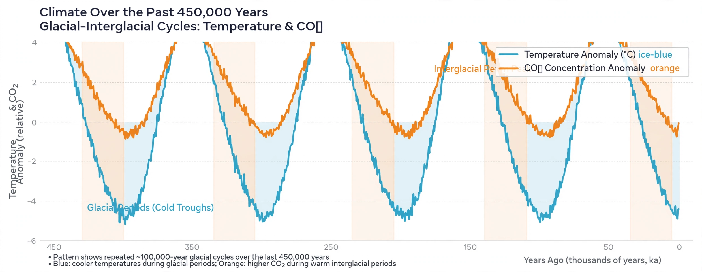

An interglacial period (or alternatively interglacial, interglaciation) is a geological interval of warmer global average temperature lasting thousands of years that separates consecutive glacial periods within an ice age. The present Holocene epoch is an interglacial that began about 11,700 years ago, following the Last Glacial Period.

During the 2.5 million years of the Quaternary, glacial and interglacial periods have alternated in step with Milankovitch cycles — variations in Earth's orbital eccentricity, axial tilt and precession. For the past million years the dominant rhythm has been about 100,000 years, with interglacials typically lasting 10,000 to 30,000 years. Well-known examples include the Eemian (about 130,000–115,000 years ago), when temperatures and sea levels were somewhat higher than today and hippopotamuses lived in the Thames, and Marine Isotope Stage 11 (about 424,000–374,000 years ago), an unusually long and warm interglacial sometimes used as an analogue for the Holocene.
Interglacials are characterised by retreat of continental ice sheets to roughly their present extent or smaller, sea levels at or above modern values, and expansion of temperate forests into formerly glaciated latitudes. They are identified in the geological record by pollen sequences, marine oxygen-isotope stages (odd-numbered stages), speleothem growth and ice-core records from Greenland and Antarctica.
Because of the current configuration of Earth's orbit, climate models suggest the Holocene interglacial could be exceptionally long even without human influence, possibly lasting another 50,000 years. Anthropogenic greenhouse-gas emissions are expected to extend this further, postponing the onset of the next glacial period. Some researchers describe the present interval as a potential "super-interglacial".
See also: Glacial period, Last Glacial Maximum, Milankovitch cycles, Snowball Earth.